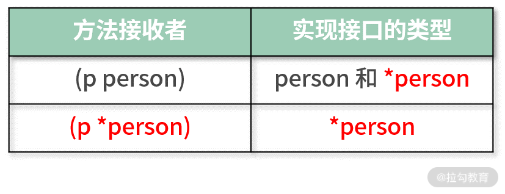

- 00 开篇词 Go 为开发者的需求设计，带你实现高效工作.md.html
- 01 基础入门：编写你的第一个 Go 语言程序.md.html
- 02 数据类型：你必须掌握的数据类型有哪些？.md.html
- 03 控制结构：if、for、switch 逻辑语句的那些事儿.md.html
- 04 集合类型：如何正确使用 array、slice 和 map？.md.html
- 05 函数和方法：Go 语言中的函数和方法到底有什么不同？.md.html
- 06 struct 和 interface：结构体与接口都实现了哪些功能？.md.html
- 07 错误处理：如何通过 error、deferred、panic 等处理错误？.md.html
- 08 并发基础：Goroutines 和 Channels 的声明与使用.md.html
- 09 同步原语：sync 包让你对并发控制得心应手.md.html
- 10 Context：你必须掌握的多线程并发控制神器.md.html
- 11 并发模式：Go 语言中即学即用的高效并发模式.md.html
- 12 指针详解：在什么情况下应该使用指针？.md.html
- 13 参数传递：值、引用及指针之间的区别？.md.html
- 14 内存分配：new 还是 make？什么情况下该用谁？.md.html
- 15 运行时反射：字符串和结构体之间如何转换？.md.html
- 16 非类型安全：让你既爱又恨的 unsafe.md.html
- 17 SliceHeader：slice 如何高效处理数据？.md.html
- 18 质量保证：Go 语言如何通过测试保证质量？.md.html
- 19 性能优化：Go 语言如何进行代码检查和优化？.md.html
- 20 协作开发：模块化管理为什么能够提升研发效能？.md.html
- 21 网络编程：Go 语言如何玩转 RESTful API 服务？.md.html
- 22 网络编程：Go 语言如何通过 RPC 实现跨平台服务？.md.html
- 23 结束语 你的 Go 语言成长之路.md.html
06 struct 和 interface：结构体与接口都实现了哪些功能？
上节课我留了一个思考题：方法是否可以赋值给一个变量？如果可以，要怎么调用它呢？答案是完全可以，方法赋值给变量称为方法表达式，如下面的代码所示：
age:=Age(25)
//方法赋值给变量，方法表达式
sm:=Age.String
//通过变量，要传一个接收者进行调用也就是age
sm(age)
我们知道，方法 String 其实是没有参数的，但是通过方法表达式赋值给变量 sm 后，在调用的时候，必须要传一个接收者，这样 sm 才知道怎么调用。
小提示：不管方法是否有参数，通过方法表达式调用，第一个参数必须是接收者，然后才是方法自身的参数。
下面开始我们今天的课程。之前讲到的类型如整型、字符串等只能描述单一的对象，如果是聚合对象，就无法描述了，比如一个人具备的名字、年龄和性别等信息。因为人作为对象是一个聚合对象，要想描述它需要使用这节课要讲的结构体。
结构体
结构体定义
结构体是一种聚合类型，里面可以包含任意类型的值，这些值就是我们定义的结构体的成员，也称为字段。在 Go 语言中，要自定义一个结构体，需要使用 type+struct 关键字组合。
在下面的例子中，我自定义了一个结构体类型，名称为 person，表示一个人。这个 person 结构体有两个字段：name 代表这个人的名字，age 代表这个人的年龄。
ch06/main.go
type person struct {
name string
age uint
}
在定义结构体时，字段的声明方法和平时声明一个变量是一样的，都是变量名在前，类型在后，只不过在结构体中，变量名称为成员名或字段名。
结构体的成员字段并不是必需的，也可以一个字段都没有，这种结构体成为空结构体。
根据以上信息，我们可以总结出结构体定义的表达式，如下面的代码所示：
type structName struct{
fieldName typeName
....
....
}
其中：
- type 和 struct 是 Go 语言的关键字，二者组合就代表要定义一个新的结构体类型。
- structName 是结构体类型的名字。
- fieldName 是结构体的字段名，而 typeName 是对应的字段类型。
- 字段可以是零个、一个或者多个。
小提示：结构体也是一种类型，所以以后自定义的结构体，我会称为某结构体或某类型，两者是一个意思。比如 person 结构体和 person 类型其实是一个意思。
定义好结构体后就可以使用了，因为它是一个聚合类型，所以比普通的类型可以携带更多数据。
结构体声明使用
结构体类型和普通的字符串、整型一样，也可以使用同样的方式声明和初始化。
在下面的例子中，我声明了一个 person 类型的变量 p，因为没有对变量 p 初始化，所以默认会使用结构体里字段的零值。
var p person
当然在声明一个结构体变量的时候，也可以通过结构体字面量的方式初始化，如下面的代码所示：
p:=person{"飞雪无情",30}
采用简短声明法，同时采用字面量初始化的方式，把结构体变量 p 的 name 初始化为“飞雪无情”，age 初始化为 30，以逗号分隔。
声明了一个结构体变量后就可以使用了，下面我们运行以下代码，验证 name 和 age 的值是否和初始化的一样。
fmt.Println(p.name,p.age)
在 Go 语言中，访问一个结构体的字段和调用一个类型的方法一样，都是使用点操作符“.”。
采用字面量初始化结构体时，初始化值的顺序很重要，必须和字段定义的顺序一致。
在 person 这个结构体中，第一个字段是 string 类型的 name，第二个字段是 uint 类型的 age，所以在初始化的时候，初始化值的类型顺序必须一一对应，才能编译通过。也就是说，在示例 {"飞雪无情",30} 中，表示 name 的字符串飞雪无情必须在前，表示年龄的数字 30 必须在后。
那么是否可以不按照顺序初始化呢？当然可以，只不过需要指出字段名称，如下所示：
p:=person{age:30,name:"飞雪无情"}
其中，第一位我放了整型的 age，也可以编译通过，因为采用了明确的 field:value 方式进行指定，这样 Go 语言编译器会清晰地知道你要初始化哪个字段的值。
有没有发现，这种方式和 map 类型的初始化很像，都是采用冒号分隔。Go 语言尽可能地重用操作，不发明新的表达式，便于我们记忆和使用。
当然你也可以只初始化字段 age，字段 name 使用默认的零值，如下面的代码所示，仍然可以编译通过。
p:=person{age:30}
字段结构体
结构体的字段可以是任意类型，也包括自定义的结构体类型，比如下面的代码：
ch06/main.go
type person struct {
name string
age uint
addr address
}
type address struct {
province string
city string
}
在这个示例中，我定义了两个结构体：person 表示人，address 表示地址。在结构体 person 中，有一个 address 类型的字段 addr，这就是自定义的结构体。
通过这种方式，用代码描述现实中的实体会更匹配，复用程度也更高。对于嵌套结构体字段的结构体，其初始化和正常的结构体大同小异，只需要根据字段对应的类型初始化即可，如下面的代码所示：
ch06/main.go
p:=person{
age:30,
name:"飞雪无情",
addr:address{
province: "北京",
city: "北京",
},
}
如果需要访问结构体最里层的 province 字段的值，同样也可以使用点操作符，只不过需要使用两个点，如下面的代码所示：
ch06/main.go
fmt.Println(p.addr.province)
第一个点获取 addr，第二个点获取 addr 的 province。
接口
接口的定义
接口是和调用方的一种约定，它是一个高度抽象的类型，不用和具体的实现细节绑定在一起。接口要做的是定义好约定，告诉调用方自己可以做什么，但不用知道它的内部实现，这和我们见到的具体的类型如 int、map、slice 等不一样。
接口的定义和结构体稍微有些差别，虽然都以 type 关键字开始，但接口的关键字是 interface，表示自定义的类型是一个接口。也就是说 Stringer 是一个接口，它有一个方法 String() string，整体如下面的代码所示：
src/fmt/print.go
type Stringer interface {
String() string
}
提示：Stringer 是 Go SDK 的一个接口，属于 fmt 包。
针对 Stringer 接口来说，它会告诉调用者可以通过它的 String() 方法获取一个字符串，这就是接口的约定。至于这个字符串怎么获得的，长什么样，接口不关心，调用者也不用关心，因为这些是由接口实现者来做的。
接口的实现
接口的实现者必须是一个具体的类型，继续以 person 结构体为例，让它来实现 Stringer 接口，如下代码所示：
ch06/main.go
func (p person) String() string{
return fmt.Sprintf("the name is %s,age is %d",p.name,p.age)
}
给结构体类型 person 定义一个方法，这个方法和接口里方法的签名（名称、参数和返回值）一样，这样结构体 person 就实现了 Stringer 接口。
注意：如果一个接口有多个方法，那么需要实现接口的每个方法才算是实现了这个接口。
实现了 Stringer 接口后就可以使用了。首先我先来定义一个可以打印 Stringer 接口的函数，如下所示：
ch06/main.go
func printString(s fmt.Stringer){
fmt.Println(s.String())
}
这个被定义的函数 printString，它接收一个 Stringer 接口类型的参数，然后打印出 Stringer 接口的 String 方法返回的字符串。
printString 这个函数的优势就在于它是面向接口编程的，只要一个类型实现了 Stringer 接口，都可以打印出对应的字符串，而不用管具体的类型实现。
因为 person 实现了 Stringer 接口，所以变量 p 可以作为函数 printString 的参数，可以用如下方式打印：
printString(p)
结果为：
the name is 飞雪无情,age is 30
现在让结构体 address 也实现 Stringer 接口，如下面的代码所示：
ch06/main.go
func (addr address) String() string{
return fmt.Sprintf("the addr is %s%s",addr.province,addr.city)
}
因为结构体 address 也实现了 Stringer 接口，所以 printString 函数不用做任何改变，可以直接被使用，打印出地址，如下所示：
printString(p.addr)
//输出：the addr is 北京北京
这就是面向接口的好处，只要定义和调用双方满足约定，就可以使用，而不用管具体实现。接口的实现者也可以更好的升级重构，而不会有任何影响，因为接口约定没有变。
值接收者和指针接收者
我们已经知道，如果要实现一个接口，必须实现这个接口提供的所有方法，而且在上节课讲解方法的时候，我们也知道定义一个方法，有值类型接收者和指针类型接收者两种。二者都可以调用方法，因为 Go 语言编译器自动做了转换，所以值类型接收者和指针类型接收者是等价的。但是在接口的实现中，值类型接收者和指针类型接收者不一样，下面我会详细分析二者的区别。
在上一小节中，已经验证了结构体类型实现了 Stringer 接口，那么结构体对应的指针是否也实现了该接口呢？我通过下面这个代码进行测试：
printString(&p)
测试后会发现，把变量 p 的指针作为实参传给 printString 函数也是可以的，编译运行都正常。这就证明了以值类型接收者实现接口的时候，不管是类型本身，还是该类型的指针类型，都实现了该接口。
示例中值接收者（p person）实现了 Stringer 接口，那么类型 person 和它的指针类型*person就都实现了 Stringer 接口。
现在，我把接收者改成指针类型，如下代码所示：
func (p *person) String() string{
return fmt.Sprintf("the name is %s,age is %d",p.name,p.age)
}
修改成指针类型接收者后会发现，示例中这行 printString(p) 代码编译不通过，提示如下错误：
./main.go:17:13: cannot use p (type person) as type fmt.Stringer in argument to printString:
person does not implement fmt.Stringer (String method has pointer receiver)
意思就是类型 person 没有实现 Stringer 接口。这就证明了以指针类型接收者实现接口的时候，只有对应的指针类型才被认为实现了该接口。
我用如下表格为你总结这两种接收者类型的接口实现规则：

可以这样解读：
- 当值类型作为接收者时，person 类型和*person类型都实现了该接口。
- 当指针类型作为接收者时，只有*person类型实现了该接口。
可以发现，实现接口的类型都有*person，这也表明指针类型比较万能，不管哪一种接收者，它都能实现该接口。
工厂函数
工厂函数一般用于创建自定义的结构体，便于使用者调用，我们还是以 person 类型为例，用如下代码进行定义：
func NewPerson(name string) *person {
return &person{name:name}
}
我定义了一个工厂函数 NewPerson，它接收一个 string 类型的参数，用于表示这个人的名字，同时返回一个*person。
通过工厂函数创建自定义结构体的方式，可以让调用者不用太关注结构体内部的字段，只需要给工厂函数传参就可以了。
用下面的代码，即可创建一个*person 类型的变量 p1：
p1:=NewPerson("张三")
工厂函数也可以用来创建一个接口，它的好处就是可以隐藏内部具体类型的实现，让调用者只需关注接口的使用即可。
现在我以 errors.New 这个 Go 语言自带的工厂函数为例，演示如何通过工厂函数创建一个接口，并隐藏其内部实现，如下代码所示：
errors/errors.go
//工厂函数，返回一个error接口，其实具体实现是*errorString
func New(text string) error {
return &errorString{text}
}
//结构体，内部一个字段s，存储错误信息
type errorString struct {
s string
}
//用于实现error接口
func (e *errorString) Error() string {
return e.s
}
其中，errorString 是一个结构体类型，它实现了 error 接口，所以可以通过 New 工厂函数，创建一个 *errorString 类型，通过接口 error 返回。
这就是面向接口的编程，假设重构代码，哪怕换一个其他结构体实现 error 接口，对调用者也没有影响，因为接口没变。
继承和组合
在 Go 语言中没有继承的概念，所以结构、接口之间也没有父子关系，Go 语言提倡的是组合，利用组合达到代码复用的目的，这也更灵活。
我同样以 Go 语言 io 标准包自带的接口为例，讲解类型的组合（也可以称之为嵌套），如下代码所示：
type Reader interface {
Read(p []byte) (n int, err error)
}
type Writer interface {
Write(p []byte) (n int, err error)
}
//ReadWriter是Reader和Writer的组合
type ReadWriter interface {
Reader
Writer
}
ReadWriter 接口就是 Reader 和 Writer 的组合，组合后，ReadWriter 接口具有 Reader 和 Writer 中的所有方法，这样新接口 ReadWriter 就不用定义自己的方法了，组合 Reader 和 Writer 的就可以了。
不止接口可以组合，结构体也可以组合，现在把 address 结构体组合到结构体 person 中，而不是当成一个字段，如下所示：
ch06/main.go
type person struct {
name string
age uint
address
}
直接把结构体类型放进来，就是组合，不需要字段名。组合后，被组合的 address 称为内部类型，person 称为外部类型。修改了 person 结构体后，声明和使用也需要一起修改，如下所示：
p:=person{
age:30,
name:"飞雪无情",
address:address{
province: "北京",
city: "北京",
},
}
//像使用自己的字段一样，直接使用
fmt.Println(p.province)
因为 person 组合了 address，所以 address 的字段就像 person 自己的一样，可以直接使用。
类型组合后，外部类型不仅可以使用内部类型的字段，也可以使用内部类型的方法，就像使用自己的方法一样。如果外部类型定义了和内部类型同样的方法，那么外部类型的会覆盖内部类型，这就是方法的覆写。关于方法的覆写，这里不再进行举例，你可以自己试一下。
小提示：方法覆写不会影响内部类型的方法实现。
类型断言
有了接口和实现接口的类型，就会有类型断言。类型断言用来判断一个接口的值是否是实现该接口的某个具体类型。
还是以我们上面小节的示例演示，我们先来回忆一下它们，如下所示：
func (p *person) String() string{
return fmt.Sprintf("the name is %s,age is %d",p.name,p.age)
}
func (addr address) String() string{
return fmt.Sprintf("the addr is %s%s",addr.province,addr.city)
}
可以看到，*person 和 address 都实现了接口 Stringer，然后我通过下面的示例讲解类型断言：
var s fmt.Stringer
s = p1
p2:=s.(*person)
fmt.Println(p2)
如上所示，接口变量 s 称为接口 fmt.Stringer 的值，它被 p1 赋值。然后使用类型断言表达式 s.(person)，尝试返回一个 p2。如果接口的值 s 是一个person，那么类型断言正确，可以正常返回 p2。如果接口的值 s 不是一个 *person，那么在运行时就会抛出异常，程序终止运行。
小提示：这里返回的 p2 已经是 *person 类型了，也就是在类型断言的时候，同时完成了类型转换。
在上面的示例中，因为 s 的确是一个 *person，所以不会异常，可以正常返回 p2。但是如果我再添加如下代码，对 s 进行 address 类型断言，就会出现一些问题：
a:=s.(address)
fmt.Println(a)
这个代码在编译的时候不会有问题，因为 address 实现了接口 Stringer，但是在运行的时候，会抛出如下异常信息：
panic: interface conversion: fmt.Stringer is *main.person, not main.address
这显然不符合我们的初衷，我们本来想判断一个接口的值是否是某个具体类型，但不能因为判断失败就导致程序异常。考虑到这点，Go 语言为我们提供了类型断言的多值返回，如下所示：
a,ok:=s.(address)
if ok {
fmt.Println(a)
}else {
fmt.Println("s不是一个address")
}
类型断言返回的第二个值“ok”就是断言是否成功的标志，如果为 true 则成功，否则失败。
总结
这节课虽然只讲了结构体和接口，但是所涉及的知识点很多，整节课比较长，希望你可以耐心地学完。
结构体是对现实世界的描述，接口是对某一类行为的规范和抽象。通过它们，我们可以实现代码的抽象和复用，同时可以面向接口编程，把具体实现细节隐藏起来，让写出来的代码更灵活，适应能力也更强。